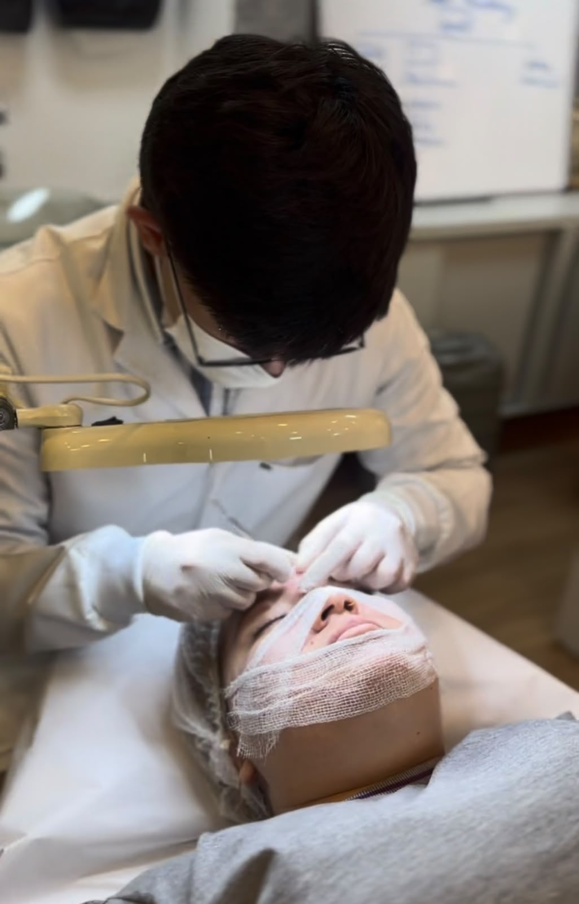

Cuidados de Pele
Limpeza de Pele
Descrição
A limpeza de pele é um protocolo profissional de higienização profunda, extração de impurezas e renovação, realizado com produtos e técnicas adequados ao seu tipo de pele.
Principais benefícios
- Remove impurezas, cravos e células mortas
- Ajuda a equilibrar a oleosidade da pele
- Prepara a pele para outros tratamentos estéticos
- Proporciona sensação imediata de renovação
Para quem é indicado
Indicado para praticamente todos os tipos de pele, de forma periódica, como parte de uma rotina de cuidado e manutenção da saúde da pele.
Como funciona
- Diagnóstico do tipo e da condição atual da pele
- Higienização profunda e esfoliação
- Extração cuidadosa das impurezas
- Finalização calmante e hidratante
Os resultados podem variar de pessoa para pessoa. Este conteúdo tem caráter informativo e não substitui uma avaliação clínica individual.
Perguntas frequentes
A limpeza de pele dói?
Pode haver leve desconforto durante a etapa de extração, mas o protocolo é conduzido com técnica para minimizar a sensibilidade.
Com que frequência devo fazer?
A frequência ideal é definida na avaliação, considerando o tipo e a condição da sua pele.
Posso fazer antes de um evento importante?
Recomendamos realizar a limpeza de pele com alguns dias de antecedência, para que a pele esteja totalmente calma no dia do evento.
Sua jornada estética começa com uma conversa.
Agende sua avaliação e conheça o protocolo pensado especialmente para você.
Falar com a Maison